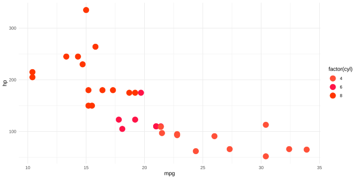
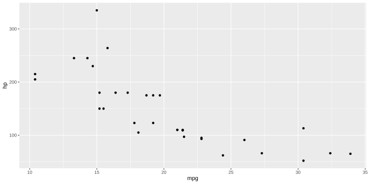

library(tidyverse)
library(gapminder)
gapminder_2007 = gapminder %>%
filter(year == 2007) %>%
mutate(continent = as.factor(continent))Semana 3 y 4: Medidas descriptivas y análisis exploratorio
Estadística descriptiva
En sesiones anteriores, mencionamos los fundamentos de la estadística y la importancia de comprender las características y tipos de datos recolectados en un estudio.
Recordemos:
Los datos pueden ser numéricos o categóricos, y cada tipo influye en cómo se analizan e interpretan.
Los datos numéricos, que pueden ser continuos (como el ingreso mensual de un hogar) o discretos (como el número de votantes en una elección), se miden y manipulan matemáticamente.
Los datos categóricos se dividen en nominales (sin orden intrínseco, como preferencias políticas), binarios (con solo dos valores posibles, como sí/no), y ordinales (con un orden implícito, como niveles de satisfacción).
Comprender el tipo de variable es fundamental para realizar análisis iniciales, ya que esta nos permite resumir y organizar la información para identificar patrones, tendencias y relaciones significativas en los datos. Por ejemplo, para datos numéricos, utilizamos medidas como la media, mediana y desviación estándar, mientras que para datos categóricos empleamos frecuencias y proporciones.
En esta sesión haremos uso de los paquetes del tidyverse y el conjunto de datos gapminder, filtrado al 2007 y categorizando la variable continente:
Otro paquete muy útil para la descripción de variables es dlookr.
Resúmenes numéricos
Se generan resúmenes numéricos a partir de variables cuantitativas, ya sean continuas o discretas. Estos resúmenes incluyen:
Medidas de tendencia central: Nos indican el valor central o típico en el conjunto de datos.
Medidas de dispersión: Describen qué tan concentrados o dispersos están los datos en torno a la tendencia central.
Medidas de posición: Ubican un valor dentro del conjunto de datos en función de su orden
Medidas de forma: Caracterizan la estructura de la distribución en términos de simetría (asimetría) y concentración (curtosis).
Medidas de tendencia central
Las medidas de tendencia central son estadísticas que describen el valor alrededor del cual tienden a concentrarse los datos. Su propósito es identificar un punto representativo que sintetice el comportamiento general de la variable.
Media
La más popular. Es la suma de todos los valores dividida por el número de observaciones.
Matemáticamente, se define como:
\[ \mu = \frac{\sum_{i=1}^{n} x_i}{n} \]
Donde:
\(\mu\) es la media.
\(x_i\) representa cada valor individual en el conjunto de datos.
\(n\) es el número total de observaciones.
Por ejemplo, para calcular la media de la esperanza de vida en el conjunto de datos filtrados al año 2007, utilizamos la función mean() en R, especificando la variable de interés (lifeExp, que representa la esperanza de vida) del conjunto de datos:
Podemos observar que la esperanza de vida media en 2007 fue de 67 años aproximadamente.
La media puede entenderse como el punto de equilibrio en un conjunto de datos, similar al centro de gravedad en una balanza. Este valor representa un balance que toma en cuenta tanto la cantidad de datos como la magnitud de cada uno. En otras palabras, la media es la ubicación del “punto de equilibrio” de todos los datos distribuidos con sus respectivas magnitudes repartidas a lo largo de un segmento de línea. En este sentido, la media indica el punto en el que el “peso” total de los valores a la izquierda se compensa exactamente con el de los valores a la derecha, por lo que ofrece una referencia del comportamiento general del conjunto.
Esto puede observarse en el siguiente gráfico, que muestra la distribución de la esperanza de vida en 2007. La línea roja indica la media, que equilibra visualmente la distribución. Si se calcula la suma de las diferencias individuales entre cada dato y la media (respetando el signo de cada diferencia), el resultado será siempre igual a cero.
Mediana
La mediana es otra medida de tendencia central, pero su definición es diferente a la media. No se basa en magnitudes acumuladas, sino en el orden de los datos. Corresponde al valor que divide al conjunto en dos mitades: el 50 % de los datos se encuentra por debajo de la mediana, y el otro 50 % por encima.
Para calcular la mediana de la esperanza de vida en el conjunto de datos filtrado al año 2007, utilizamos la función median() en R, especificando la variable de interés (lifeExp):
La mediana de la esperanza de vida en 2007 se sitúa alrededor de 72 años.
El siguiente gráfico muestra la distribución de la esperanza de vida en 2007, con la mediana destacada como una línea azul:

La mediana es el punto medio que garantiza que la mitad de los datos está por encima y la otra mitad por debajo, sin tener en cuenta la magnitud de los valores individuales.
Mediana vs. media
La media, aunque es una medida ampliamente utilizada para representar el centro de un conjunto de datos, puede enfrentar ciertos problemas, especialmente en distribuciones que no son simétricas. Esto es debido a su sensibilidad a los valores extremos o outliers. En presencia de estos valores atípicos, la media puede desplazarse de forma significativa, lo que podría dar una impresión errónea del centro “típico” de los datos.
La mediana, al dividir los datos en dos mitades iguales, es una medida robusta, lo que significa que no se ve fácilmente afectada por valores extremos o atípicos que podrían distorsionar la media. No importa cuán grandes o pequeños sean los valores individuales, la mediana siempre asegura una división equitativa en términos de la cantidad de datos a cada lado, lo que la convierte en una opción confiable para resumir el punto medio de distribuciones no simétricas.

La media busca el punto central de los datos considerando la magnitud de cada valor y las distancias entre ellos. A diferencia de la mediana, que divide los datos en dos grupos con igual número de observaciones, la media no garantiza que haya la misma cantidad de datos a cada lado, pero sí identifica un punto en el que los valores más grandes y más pequeños se compensan en conjunto. En este sentido, la media actúa como un punto medio que equilibra las distancias de todos los valores, tomando en cuenta tanto cuántos datos hay como cuán grandes o pequeños son en relación con el resto del conjunto.
Aunque la mediana es especialmente útil en la presencia de valores extremos (outliers) o distribuciones asimétricas, la media sigue siendo una herramienta fundamental debido a su capacidad para incorporar la influencia de todos los datos del conjunto. Esto la hace más sensible a cualquier cambio dentro de la distribución, lo que resulta valioso cuando se busca que la medida central refleje el impacto de todos los valores, incluso los más extremos o inusuales.
Sin embargo, la mediana también tiene sus propias limitaciones. Su cálculo solo considera la posición central del conjunto de datos y, en consecuencia, ignora la información sobre los valores individuales. Por ejemplo, si evaluamos la satisfacción ciudadana hacia los servicios públicos en una escala de 1 a 4 (donde 1 es “muy insatisfecho” y 4 es “muy satisfecho”) y encontramos que 600 de los 1000 encuestados seleccionaron 1, la mediana será 1. Esto indica una mayoría insatisfecha, pero no refleja la diversidad de opiniones del grupo, donde una parte considerable eligió valores como 2, 3 o 4. En contraste, la media, que podría ser 1.65 en este caso, captura mejor esa variabilidad al considerar todos los datos en el cálculo.
Al final, la elección entre la media y la mediana depende del contexto y de las características del conjunto de datos. La media es ideal cuando queremos considerar todas las variaciones en los datos, pero puede ser afectada significativamente por valores extremos o distribuciones sesgadas (exploraremos esto más adelante). Por otro lado, la mediana es una opción más robusta que proporciona una visión clara del punto medio, aunque con la limitación de no utilizar toda la información disponible, lo que puede llevar a la pérdida de detalles importantes sobre la variabilidad o la influencia de valores extremos. Por ello, lo más informativo es reportar ambas.
Moda
La moda se define como el valor que ocurre con mayor frecuencia en un conjunto de datos. Es especialmente útil cuando se trabaja con datos categóricos o discretos, donde los valores no son numéricos o no tienen una relación de orden clara (por ejemplo, preferencias políticas, o nacionalidades). Hablaremos mas de ella en los resúmenes categóricos.
Medidas de dispersión
Las medidas de dispersión son estadísticas que describen la variabilidad o dispersión de un conjunto de datos. Mientras que las medidas de tendencia central, como la media y la mediana, nos indicaban un valor central que representa el “centro” de los datos, las medidas de dispersión nos muestran qué tan alejados o agrupados están los datos en relación con ese valor central. Es decir, permiten evaluar el grado de concentración o dispersión de los datos alrededor de la referencia representativa.
Rango
El rango es la diferencia entre el valor máximo y el valor mínimo de un conjunto de datos. Es la medida de dispersión más simple, y nos da una idea rápida de la amplitud de los datos. Sin embargo, el rango puede resultar engañoso cuando el conjunto de datos contiene valores atípicos, ya que estos pueden ampliar artificialmente la distancia entre el valor mínimo y el máximo, sin reflejar adecuadamente la dispersión general de los datos. Por lo que es una medida poco robusta.
Por ejemplo, para calcular el rango de la esperanza de vida en el conjunto de datos filtrado al año 2007, simplemente restamos el valor mínimo del valor máximo:
O con la función range()
El rango es útil para entender la extensión de los datos, pero no proporciona información sobre cómo se distribuyen los valores entre el mínimo y el máximo.
Varianza y desviación estándar
La varianza y la desviación estándar son medidas de dispersión que nos indican, en promedio, cuánto se desvían los datos del valor central, que en este caso es la media. Aunque estos conceptos pueden sonar un poco complicados al principio, los vamos a desglosar paso a paso.
Primero, recordemos que la media es el promedio de todos los valores de esperanza de vida en nuestro conjunto de datos:
Calculamos que la esperanza de vida media en 2007 es de aproximadamente 67 años. Este valor representa el “centro” alrededor del cual queremos ver cómo se distribuyen las esperanzas de vida de diferentes países.
Para cada país en nuestro conjunto de datos, calculamos qué tan lejos está su esperanza de vida de la media de 67 años. Estas diferencias nos muestran si la esperanza de vida en un país es mayor o menor que el promedio mundial. Para visualizar esto, podemos usar un gráfico de puntos, donde cada punto representa un país, y la línea roja en el gráfico indica la media de 67 años. Esto nos permite ver qué países están por encima o por debajo de la media y cuán lejos están de este valor central.
Estas diferencias son importantes porque nos permiten ver la variabilidad en los datos: un valor positivo indica que la esperanza de vida en ese país es mayor que la media, mientras que un valor negativo indica que es menor. Cuanto más grande sea la diferencia, mayor es la desviación de ese país con respecto al valor central, lo que nos da una primera idea de cuán dispersos están los datos alrededor de la media.
Sin embargo, si simplemente sumáramos estas diferencias, las positivas y las negativas se cancelarían entre sí, resultando en una suma de cero. ¿Por qué? Si recuerdas la definición de media, es precisamente lo que hace la media: equilibrar las diferencias por encima y por debajo del valor central. Este cero no nos proporcionaría ninguna información útil sobre la variabilidad de los datos. Para evitar este problema, elevamos cada diferencia al cuadrado, lo que convierte todas las diferencias en valores positivos y da más peso a las desviaciones más grandes.

Luego, tomamos el promedio de todas esas diferencias al cuadrado y las dividimos el el número de datos, lo que nos da la varianza. La varianza mide cuánto se dispersan los datos en relación con la media. Se define como:
\[
\sigma^2 = \frac{\sum_{i=1}^{n} (x_i - \mu)^2}{n}
\] Donde:
- (\(\sigma^2\)) es la varianza.
- (\(x_i\)) representa cada valor individual.
- (\(\mu\)) es la media.
- (\(n\)) es el número total de observaciones.
La varianza nos da una idea de cuánta variabilidad hay en las esperanzas de vida de los diferentes países en comparación con la media de 67 años. Podemos calcular la varianza en R fácilmente:
Sin embargo, la varianza tiene un problema: no es tan fácil de interpretar directamente porque está en unidades “cuadradas”. Sabemos que una menor varianza indica menos variación y una mayor varianza indica más, pero al elevar al cuadrado las diferencias, hemos “inflado” estos valores. Para corregir esto, le sacamos la raíz cuadrada a la varianza, lo que nos da la desviación estándar. La desviación estándar nos dice, en promedio, cuánto se desvía la esperanza de vida de un país del valor central de 67 años, pero en las mismas unidades que estamos utilizando para medir la esperanza de vida (años).
\[ \sigma = \sqrt{\frac{\sum_{i=1}^{n} (x_i - \mu)^2}{n}} \]
La desviación estándar recibe su nombre porque es una medida “estandarizada” de cuánto se desvían los datos del valor central, la media. Al sacar la raíz cuadrada de la varianza, no solo hacemos que la medida sea más fácil de interpretar, sino que también estandarizamos la dispersión de los datos, permitiendo que podamos comparar la variabilidad entre diferentes conjuntos de datos, incluso si están en diferentes escalas o unidades. La desviación estándar nos proporciona una manera consistente de entender la variabilidad en cualquier situación, sean años, alturas, dinero, gramos o kilómetros:
En R, calculamos la desviación estándar usando sd()
La desviación estándar junto con la media y la mediana son las medidas más útiles y utilizadas para variables numéricas en el análisis estadístico. Seguiremos viéndolas en contextos más complejos en el transcurso del libro.
Medidas de posición
Las medidas de posición son estadísticas que nos permiten describir dónde se sitúan los valores de un conjunto de datos en relación con los demás. Tenemos valores como los cuartiles, percentiles y deciles, dependiendo de cuantas partes dividimos los datos.
Cuartiles
Los cuartiles dividen el conjunto de datos en cuatro grupos iguales. Los tres cuartiles son los siguientes:

El primer cuartil (Q1), que es el percentil 25, es el valor en el cual el 25% de los datos se encuentra por debajo.
El segundo cuartil (Q2) es la mediana, de la cual ya hemos hablado, y es el valor donde el 50% está por debajo de él y el 50% está por encima de él.
El último cuartil es el tercer cuartil (Q3), que es el valor donde el 75% de los datos se encuentra por debajo de él.
Estas medidas ayudan a comprender la distribución de los datos en varias secciones y la forma en que se agrupan alrededor de la mediana.
Para calcular los cuartiles de la esperanza de vida en el conjunto de datos filtrado al año 2007, podemos utilizar la función quantile() en R:
Percentiles
Los percentiles son una extensión de los cuartiles y dividen el conjunto de datos en 100 partes iguales. El percentil 25, por ejemplo, es equivalente al primer cuartil, y el percentil 50 es equivalente a la mediana. Los percentiles son útiles cuando queremos conocer la posición relativa de un valor en comparación con el resto de los datos.
Podemos calcular cualquier percentil en R utilizando la función quantile(), especificando el porcentaje deseado. Por ejemplo, el percentil 90 de la esperanza de vida sería:
Rango intercuartílico (IQR)
El rango intercuartílico es una medida de dispersión basada en los cuartiles. Representa la diferencia entre el tercer cuartil (Q3) y el primer cuartil (Q1), y nos indica la amplitud de la “caja” central de los datos, es decir, la mitad del conjunto de datos alrededor de la mediana. Esta medida es resistente a los valores extremos, ya que solo toma en cuenta el rango intermedio de los datos.
Podemos calcular el rango intercuartílico en R utilizando la función IQR():
El rango intercuartílico es especialmente útil cuando los datos contienen valores atípicos o extremos, ya que el IQR no se ve afectado por estos valores, a diferencia de la desviación estándar o el rango total. De esta forma, ayuda a tener una medida más robusta de la dispersión.
Medidas de forma de la distribución
Las medidas de forma de la distribución nos permiten describir la simetría y el apuntamiento de la distribución de los datos, lo que nos da información adicional sobre la estructura de los datos más allá de la tendencia central y la dispersión.
Asimetría (Skewness)
La asimetría mide la simetría de la distribución de los datos. Pero, ¿a qué nos referimos con asimetría? La asimetría mide la falta de simetría en la distribución de los datos. Una distribución es simétrica cuando los valores se distribuyen de manera uniforme a ambos lados de la media.

La asimetría describe si la cola de la distribución se inclina más hacia la derecha o hacia la izquierda, lo cual nos indica qué tan equilibrada está la distribución respecto a su centro.

- Asimetría positiva (o hacia la derecha): La cola de la distribución es más larga a la derecha. Esto significa que hay más valores pequeños concentrados cerca de la media y algunos pocos valores grandes que están mucho más alejados, extendiendo la cola derecha. En este escenario, la media suele ser mayor que la mediana, ya que los valores extremos tiran la media hacia la derecha.
- Asimetría negativa (o hacia la izquierda): La cola de la distribución es más larga a la izquierda. Esto significa que hay más valores grandes cerca de la media y unos pocos valores muy pequeños que extienden la cola hacia la izquierda. En este tipo de distribución, la mediana suele ser mayor que la media.
- Asimetría nula (distribución simétrica): Si la asimetría es cercana a cero, los valores están distribuidos de manera uniforme a ambos lados de la media. Un ejemplo clásico de esto es la distribución normal, donde la media y la mediana coinciden.
Podemos calcular la asimetría en R usando la función skewness() del paquete dlookr:
El valor de asimetría (skewness) de lifeExp es -0.6814798, lo que indica que la distribución de la esperanza de vida en 2007 presenta una asimetría negativa.
Lo podemos representar con un gráfico de densidad:

Curtosis
La curtosis mide el apuntamiento de la distribución, es decir, qué tan concentrados o dispersos están los datos en torno a la media. Se utiliza para describir la forma de la distribución, en particular, la presencia de valores extremos en las colas. La curtosis estándar de una distribución normal es 3, lo que se considera “curtosis mesocúrtica”. Las distribuciones pueden tener mayor o menor curtosis, lo que sugiere diferencias en la concentración de los datos y en la presencia de valores extremos.

- Curtosis alta (leptocúrtica): En una distribución con alta curtosis, los datos están muy concentrados alrededor de la media, lo que genera un pico más alto y colas más largas. Esto sugiere que hay una mayor probabilidad de que los datos contengan valores extremos, tanto bajos como altos. Por ejemplo, en una distribución de ingresos, si observamos una alta curtosis, significa que hay muchas personas con ingresos muy similares, pero también existen algunos individuos con ingresos extremadamente altos o bajos.
- Curtosis baja (platicúrtica): En una distribución con baja curtosis, los datos están más dispersos y distribuidos de manera uniforme, lo que produce una distribución más plana y con colas cortas. Esto sugiere que hay menos valores extremos y que los datos están más uniformemente repartidos alrededor de la media. Un ejemplo podría ser una distribución de alturas en una población donde la mayoría de los individuos tienen estaturas similares, sin grandes desviaciones.
- Curtosis normal (mesocúrtica): La distribución normal tiene una curtosis de 3, lo que indica una forma estándar con una cantidad moderada de valores concentrados alrededor de la media y colas de longitud moderada. Este es el punto de referencia con el cual se comparan las distribuciones más apuntadas o más planas.
Podemos calcular la curtosis en R usando también la función kurtosis() del paquete dlookr:
El valor de curtosis de lifeExp es 2.16 lo que indica que es platicúrtica, es decir, más plana que una distribución normal, con colas más cortas y menos valores extremos.
Ambas medidas de forma, asimetría y curtosis, nos ayudan a entender mejor la forma de la distribución y a identificar posibles anomalías o valores extremos que no serían evidentes solo con las medidas de tendencia central y dispersión.
Resúmenes categóricos
Las variables categóricas son aquellas que representan grupos o categorías en lugar de valores numéricos. A diferencia de las variables numéricas, que pueden ser descritas mediante medidas como la media o la desviación estándar, las variables categóricas no se prestan a una descripción numérica directa. En lugar de esto, necesitamos utilizar otras técnicas para resumir y entender estas variables.
Para la demostración, modificaremos la base de datos para agregarle una variable categórica adicional:
gapminder_mod = gapminder_2007 %>%
mutate(nivel_esp = cut(lifeExp,
breaks = c(0, 65, 80, Inf),
labels = c("bajo", "medio", "alto"))) %>%
select(country, continent, lifeExp, nivel_esp)
head(gapminder_mod)# A tibble: 6 × 4
country continent lifeExp nivel_esp
<fct> <fct> <dbl> <fct>
1 Afghanistan Asia 43.8 bajo
2 Albania Europe 76.4 medio
3 Algeria Africa 72.3 medio
4 Angola Africa 42.7 bajo
5 Argentina Americas 75.3 medio
6 Australia Oceania 81.2 alto La variable nivel_esp se ha creado para clasificar la esperanza de vida (lifeExp) en tres categorías:
Bajo: Esperanza de vida menor a 65 años.
Medio: Esperanza de vida entre 65 y 80 años.
Alto: Esperanza de vida mayor a 80 años.
Para variables categóricas, utilizamos dos medidas clave: la frecuencia y la proporción.
Frecuencia: Esta medida indica el número de veces que ocurre cada categoría en el conjunto de datos. Es útil para comprender cuántas observaciones caen en cada categoría específica.
Por ejemplo, si estamos analizando las categorías de esperanza de vida en el conjunto de datos
gapminder_mod, la frecuencia nos dirá cuántos países caen en cada una de las categorías de esperanza de vida (bajo,medio,alto).Para calcular las frecuencias en R, usamos la función
tablepara contar el número de países en cada categoría denivel_esp:De esta forma podemos observar que, bajo nuestros parámetros, 52 países tiene una baja esperanza de vida, 77 media y 13 alta.
- Proporción: La proporción representa la frecuencia de cada categoría en relación con el total de observaciones. Se calcula dividiendo la frecuencia de una categoría por el número total de observaciones. La proporción es útil para entender la distribución relativa de las categorías en el conjunto de datos.
Siguiendo el mismo ejemplo, la proporción nos indicará qué fracción del total de países cae en cada categoría de esperanza de vida. Usamos prop.table sobre la tabla de frecuencias (es posible aplicar un función dentro de otra):
Lo que hace esto es calcular la proporción de cada categoría dividiendo la frecuencia de cada categoría por el total de observaciones. El resultado es una tabla que muestra la proporción de países en cada categoría de nivel_esp. Podemos observar que el 36.6% países tiene una baja esperanza de vida, 54.2% media y 9.1% alta.
En el apartado de medidas de tendencia central, mencionamos brevemente la moda. Podemos retomarla en el contexto de las variables categóricas. A diferencia de otras medidas como la media o la mediana, que son más adecuadas para variables numéricas, la moda es especialmente útil en variables categóricas, ya que nos permite identificar cuál es la categoría que predomina en un grupo o conjunto de observaciones.
La moda de la variable nivel_esp es medio, ya que es la categoría con mayor frecuencia (77 países). Esto indica que, en general, la mayoría de los países tienen una esperanza de vida entre 65 y 80 años en este conjunto de datos.
Gráficos descriptivos
Los gráficos descriptivos son herramientas esenciales al momento de realizar un análisis, ya que nos permiten visualizar y comprender de manera más intuitiva los patrones y distribuciones de nuestros datos, tanto numéricos como categóricos. A través de los gráficos, podemos identificar rápidamente tendencias, relaciones y posibles anomalías en los datos que podrían no ser evidentes solo con resúmenes numéricos.
Gráficos para variables numéricas
Los datos numéricos, por su naturaleza, permiten realizar operaciones matemáticas que nos ayudan a comprender su distribución. Esta capacidad también se refleja en los gráficos que utilizamos para visualizarlos. Los gráficos más comunes para datos numéricos incluyen histogramas, diagramas de caja (boxplots), gráficos de dispersión, entre otros. Cada uno de estos gráficos no solo representa visualmente los datos, sino que también captura aspectos fundamentales ya mencionados antes como la tendencia central y la dispersión.
Histogramas:
El histograma es una representación gráfica de la distribución de los datos numéricos. Divide los datos en intervalos (o “bins”) y muestra la frecuencia de los datos que caen dentro de cada intervalo. Por ejemplo, para visualizar la distribución de la esperanza de vida en 2007, podemos utilizar un histograma:
gapminder_2007 %>%
ggplot(aes(x = lifeExp)) +
geom_histogram(
# Color de relleno del histograma
fill = '#2ecc71',
# Color de los bordes de las barras
color = 'black',
# Ancho de las barras del histograma
binwidth = 5) +
labs(title = 'Distribución de la esperanza de vida (2007)',
x = 'Esperanza de vida',
y = 'Frecuencia') +
theme_minimal() Uno de los argumentos más importantes al crear un histograma es binwidth, que controla el ancho de estos intervalos. En este ejemplo, binwidth = 5 agrupa las esperanzas de vida en intervalos de 5 años. Si aumentamos el binwidth, los intervalos serán más amplios, lo que puede suavizar la distribución pero también ocultar detalles. Por el contrario, un binwidth más pequeño creará más intervalos, mostrando más detalles pero haciendo el gráfico potencialmente más ruidoso y difícil de interpretar. El valor de binwidth puede cambiar drásticamente la apariencia del histograma:
Con binwidth de 10:
gapminder_2007 %>%
ggplot(aes(x = lifeExp)) +
geom_histogram(
# Color de relleno del histograma
fill = '#2ecc71',
# Color de los bordes de las barras
color = 'black',
# Ancho de las barras del histograma
binwidth = 10) +
labs(title = 'Distribución de la esperanza de vida (2007)',
x = 'Esperanza de vida',
y = 'Frecuencia') +
theme_minimal() Con binwidth de 2:
Diagramas de caja (Boxplots):
El boxplot es útil para resumir la distribución de los datos mostrando los cuartiles, la mediana y los valores atípicos.

La caja en el boxplot representa el rango intercuartílico (IQR), la distancia entre el primer cuartil (Q1) y el tercer cuartil (Q3). Es decir, la caja contiene el 50% central de los datos.
Q1 (Primer cuartil): Marca el 25% de los datos más bajos. Es el límite inferior de la caja.
Q3 (Tercer cuartil): Marca el 25% de los datos más altos. Es el límite superior de la caja.
Línea dentro de la Caja (Mediana): La línea horizontal dentro de la caja representa la mediana del conjunto de datos. La mediana es el valor que divide el conjunto de datos en dos partes iguales: el 50% de los datos está por debajo de la mediana y el otro 50% por encima. Si la mediana está más cerca de Q1 o de Q3, esto indica que la distribución de los datos es asimétrica (sesgada).
Bigotes (Whiskers): Los bigotes se extienden desde los bordes de la caja hasta los valores más lejanos que aún están dentro de 1.5 veces el rango intercuartílico (1.5 * IQR) desde Q1 y Q3. Los puntos más cercanos a Q1 y Q3 que están dentro de este rango son los extremos de los bigotes. Estos bigotes ayudan a visualizar la dispersión de los datos fuera de la caja.
Puntos Atípicos (Outliers): Cualquier dato que se encuentra fuera del rango cubierto por los bigotes (más allá de 1.5 veces el IQR desde Q1 o Q3) se representa como un punto individual. Estos puntos se consideran outliers o valores atípicos. Los outliers pueden ser importantes para identificar observaciones inusuales que podrían requerir una atención especial o que podrían influir de manera significativa en los resultados del análisis.
Podemos realizarlo para la variable a nivel mundial:

O por cada continente definiendo el otro eje del gráfico:

Gráficos de dispersión (Scatterplots):
Los gráficos de dispersión son ideales para visualizar la relación entre dos variables numéricas. Los argumentos como color, size y alpha y shape pueden ajustarse directamente dentro de geom_point() para aplicar efectos visuales fijos a todos los puntos, o bien dentro de aes() para mapear nuevas variables:
Agregando size modificamos el tamaño:
gapminder_2007 %>%
ggplot(aes(x = log(gdpPercap),
y = lifeExp)) +
geom_point(
# Color de los puntos (verde claro)
color = '#2ecc71',
# Tamaño de los puntos
size = 3) +
labs(title = 'Relación entre PIB per cápita y esperanza de vida (2007)',
x = 'PIB per cápita',
y = 'Esperanza de vida') +
theme_minimal() Agregando alpha modificamos la transparencia:
gapminder_2007 %>%
ggplot(aes(x = log(gdpPercap),
y = lifeExp)) +
geom_point(
# Color de los puntos (verde claro)
color = '#2ecc71',
# Tamaño de los puntos
size = 3,
# Transparencia de los puntos (valor entre 0 y 1)
alpha = 0.6) +
labs(title = 'Relación entre PIB per cápita y esperanza de vida (2007)',
x = 'PIB per cápita',
y = 'Esperanza de vida') +
theme_minimal() 
Podemos modificar los puntos por otras formas geométrias con shape
gapminder_2007 %>%
ggplot(aes(x = log(gdpPercap),
y = lifeExp)) +
geom_point(
# Color de los puntos
color = '#2ecc71',
# Tamaño de los puntos
size = 3,
# Transparencia de los puntos (entre 0 y 1)
alpha = 0.6,
# Forma de los puntos (17 es el símbolo de un triángulo)
shape = 17) +
labs(title = 'Relación entre PIB per cápita y esperanza de vida (2007)',
x = 'PIB per cápita',
y = 'Esperanza de vida') +
theme_minimal() gapminder_2007 %>%
ggplot(aes(x = log(gdpPercap), y = lifeExp)) +
geom_point(color = '#2ecc71',
size = 3,
alpha = 0.6,
# Forma de los puntos (18 es un símbolo de diamante)
shape = 18) +
labs(title = 'Relación entre PIB per cápita y esperanza de vida (2007)',
x = 'PIB per cápita',
y = 'Esperanza de vida') +
theme_minimal()Cuando pasamos estos argumentos dentro de aes(), los vinculamos a una variable del conjunto de datos, lo que permite que los puntos reflejen atributos adicionales tanto numéricos como categóricos:
Puedes usar color para asignar colores a los puntos según una variable como continente.
gapminder_2007 %>%
ggplot(aes(x = log(gdpPercap),
y = lifeExp,
# Asigna un color diferente a cada continente
color = continent)) +
geom_point() +
labs(title = 'Relación entre PIB per cápita y esperanza de vida (2007)',
x = 'PIB per cápita',
y = 'Esperanza de vida',
color = 'Continente') +
theme_minimal()El tamaño de los puntos (size) puede reflejar una variable numérica, como la población.
gapminder_2007 %>%
ggplot(aes(x = log(gdpPercap),
y = lifeExp,
# El tamaño de los puntos se asigna según la población
size = pop)) +
geom_point() +
labs(title = 'Relación entre PIB per cápita y esperanza de vida (2007)',
x = 'PIB per cápita',
y = 'Esperanza de vida',
color = 'Continente') +
theme_minimal()
alpha controla la transparencia de los puntos, y puede estar vinculado a una variable numérica para indicar niveles de intensidad. Podemos usar una escala logarítmica para la población (pop)
gapminder_2007 %>%
ggplot(aes(x = log(gdpPercap),
y = lifeExp,
# Se asigna la transparencia según el logaritmo de la población
alpha = log(pop))) +
geom_point() +
labs(title = 'Relación entre PIB per cápita y esperanza de vida (2007)',
x = 'PIB per cápita',
y = 'Esperanza de vida',
color = 'Continente') +
theme_minimal()
En este caso, los puntos con mayor transparencia representan países con menor población.
shape puede asignar diferentes formas a los puntos en función de una variable categórica.
En este ejemplo, cada continente tiene una forma distinta en los puntos del gráfico.
Ahora podemos integrar todo ello en una sola gráfica. Recuerda: los argumentos en geom_point() son para todas las geometrías de la gráfica y los argumentos en aes() son para mapear la estética a una variable:
gapminder_2007 %>%
ggplot(aes(x = log(gdpPercap),
y = lifeExp,
# Asigna colores según el continente
color = continent,
# Asigna el tamaño de los puntos según la población
size = pop)) +
# Establece la transparencia de los puntos
geom_point(alpha = 0.6,
# Forma de los puntos (19 corresponde a círculos sólidos)
shape = 19) +
labs(title = 'Relación entre PIB per cápita y esperanza de vida (2007)',
x = 'PIB per cápita', # Etiqueta del eje X
y = 'Esperanza de vida', # Etiqueta del eje Y
color = 'Continente') + # Leyenda para los colores, correspondiente al continente
scale_color_manual(values = c("Asia" = "#2471a3", # Asigna color azul a Asia
"Europe" = "#229954", # Asigna color verde a Europa
"Africa" = "#a93226", # Asigna color rojo a África
"Americas" = "#884ea0", # Asigna color morado a las Américas
"Oceania" = "#d4ac0d")) + # Asigna color amarillo a Oceanía
# Establece el rango del tamaño de los puntos entre 1 y 20
scale_size_continuous(range = c(1, 20),
# Define puntos de ruptura para los tamaños (1M, 100M, 1B)
breaks = c(1e6, 1e8, 1e9),
# Etiquetas de los tamaños (1 millón, 100 millones, 1 mil millones)
labels = c("1M","100M", "1B")) +
theme_minimal() Como tercera variable podemos resaltar el continente
gapminder_2007 %>%
ggplot(aes(x = log(gdpPercap), y = lifeExp, color = continent)) +
geom_point(alpha = 0.6, shape = 15, size = 3) + # Mantener el tamaño fijo y más pequeño
labs(title = 'Relación entre PIB per cápita y esperanza de vida (2007)',
x = 'PIB per cápita',
y = 'Esperanza de vida',
color = 'Continente') +
scale_color_manual(values = c("Asia" = "#2471a3",
"Europe" = "#229954",
"Africa" = "#a93226",
"Americas" = "#884ea0",
"Oceania" = "#d4ac0d")) +
theme_minimal()
O podemos resaltar la población
gapminder_2007 %>%
ggplot(aes(x = log(gdpPercap), y = lifeExp, size = pop)) +
geom_point(alpha = 0.6, color = '#229954') +
labs(title = 'Relación entre PIB per cápita y esperanza de vida (2007)',
x = 'PIB per cápita',
y = 'Esperanza de vida',
color = 'Continente') +
scale_size_continuous(range = c(1, 20),
breaks = c(1e6, 1e8, 1e9),
labels = c("1M","100M", "1000M")) +
theme_minimal()Pero ojo, a veces “menos es más”. No siempre más datos o más detalles en una gráfica la hacen mejor o más informativa. Si introducimos demasiada información, podemos sobrecargar la visualización y terminar con un gráfico que, en vez de ser claro, se vuelve confuso o poco útil. Hay que encontrar un equilibrio entre la estética y la información que queremos transmitir. Al final, es tu decisión cómo equilibrar estos elementos según lo que quieras resaltar.
Gráficos para variables categóricas
Las variables categóricas representan distintos grupos o categorías dentro de los datos. A diferencia de las variables numéricas, no se pueden realizar operaciones matemáticas directas con ellas. Sin embargo, son fundamentales para analizar patrones de distribución, frecuencia y relación entre grupos. En este caso, los gráficos para variables categóricas nos ayudan a identificar cómo se distribuyen los datos entre diferentes categorías y cómo estas se relacionan con otras variables.
Los gráficos más comunes para visualizar variables categóricas son los gráficos de barras, los diagramas de torta y los diagramas de mosaico. Cada uno de estos gráficos cumple un propósito particular, pero todos nos ofrecen una representación visual clara de la frecuencia o proporción de cada categoría.
Gráficos de barras:
Un gráfico de barras es ideal para visualizar la distribución de categorías de una variable. Cada barra representa una categoría y su altura (o longitud) corresponde a la frecuencia o proporción de datos en dicha categoría. Es muy útil cuando se quiere comparar la frecuencia de varias categorías.
En este gráfico, el eje x representa las categorías de expectativa de vida, y el eje y muestra la cantidad de países en cada categoría. Si queremos destacar visualmente algunas categorías, podemos usar fill para asignar un color específico a cada una:

Incluso con facet_wrap() podemos crear un gráfico de barras para cada continente
Gráfico de Barras Apiladas:
Una variación del gráfico de barras tradicional pero introducimos la relación con una variable adicional. En este gráfico cada barra está dividida en segmentos que representan subcategorías de una variable adicional.
En este gráfico, el eje x representa los niveles de esperanza de vida, mientras que el eje y muestra la cantidad de países en cada categoría. El color de cada segmento dentro de una barra representa un continente, lo que visualizar la distribución de países en cada nivel de esperanza de vida.
Normalmente, si queremos facilitar la comparación entre subcategorías, podemos usar position = 'fill' para normalizar las alturas de las barras y convertirlo en un gráfico de proporciones:
Diagramas de torta (Pie charts):
El diagrama de torta es otra forma común de representar variables categóricas. Aunque se usa con frecuencia, es importante tener en cuenta que este gráfico puede no ser tan eficaz cuando hay muchas categorías o cuando las diferencias entre las proporciones son mínimas. El propósito es mostrar las proporciones relativas de cada categoría dentro del total. En caso usarlo es importarte saber que añadir etiquetas con los porcentajes en un diagrama de torta es necesario para mejorar la comprensión visual del gráfico.
gapminder_2007 %>%
ggplot(aes(x = "", fill = nivel)) +
geom_bar(width = 1, stat = "count") +
coord_polar(theta = "y") +
labs(title = 'Proporción de países por esperanza de vida (2007)',
fill = 'Expectativa de Vida') +
theme_void() + # Para eliminar las etiquetas de los ejes
# Añadimos texto con el cálculo de la proporción
geom_text(aes(label =
scales::percent(after_stat(count)/sum(after_stat(count)))),
stat = 'count',
position = position_stack(vjust = 0.5),
color = 'white') # Añadir etiquetas con porcentajes
Diagramas de mosaico:
ste tipo de gráfico es útil para visualizar la relación entre dos variables categóricas mediante un diagrama de mosaico. Conceptualmente, estos gráficos permiten representar tablas de contingencia de forma gráfica, mostrando simultáneamente la distribución conjunta de las categorías y la posible asociación entre ellas. En R, una implementación robusta de este tipo de gráficos se encuentra en el paquete vcd.

En el gráfico, cada bloque rectangular representa una combinación de categorías entre continente y nivel de expectativa de vida. El área de cada bloque es proporcional a la frecuencia observada de países que pertenecen a dicha combinación, lo que permite comparar tanto el peso relativo de cada continente como la distribución interna de los niveles de expectativa de vida.
Además del área, los diagramas de mosaico pueden incorporar información sobre la asociación entre variables categóricas mediante el uso de residuos de Pearson. Estos residuos cuantifican la diferencia entre la frecuencia observada en cada celda de la tabla de contingencia y la frecuencia que se esperaría bajo el supuesto de independencia entre las variables. Un residuo positivo indica que la combinación ocurre con mayor frecuencia de la esperada, mientras que un residuo negativo señala que ocurre con menor frecuencia.
Existen formas más detalladas de reportar tanto variables categóricas como numéricas. El proceso completo para explorar y entender los datos se denomina análisis exploratorio de datos o (EDA) por sus siglas en inglés (Exploratory Data Analysis).
Prácticas a evitar al crear gráficos
Así como los gráficos de torta pueden resultar no se la mejor decisión al momento de comunicar nuestros datos o resultados, existen otros gráficos o estilo con los que se debería tener precaución. Por ejemplo:
Los gráficos 3D pueden ser visualmente atractivos para algunos, pero a menudo dificultan la interpretación de los datos. Las distorsiones del espacio 3D y la perspectiva pueden hacer que las relaciones entre los puntos no sean claras, y la profundidad añadida puede confundir al espectador.

Extraído de: https://peltiertech.com/excel-3d-charts-charts-with-no-value/
Los colores similares o brillantes pueden dificultar la lectura, donde se que necesita contrastes claros entre categorías.
Los gráficos sin títulos, etiquetas o leyendas son difíciles de interpretar. El público no sabe qué representan las variables o qué significa cada color o forma.
Análisis exploratorio de datos
El EDA (Exploratory Data Analysis) es un proceso que integra de forma sistemática todo lo que hemos realizado previamente, como el cálculo de medidas de tendencia central, dispersión, asimetría, curtosis y la visualización de datos a través de gráficos. Es una forma estructurada de explorar los datos para detectar patrones, anomalías y relaciones importantes entre variables, combinando análisis numérico y visual. Tenemos que realizar dos tipos de análisis: en univariado y el bivariado.
Vamos a recordar la estructura del dataset gapminder_2007
tibble [142 × 7] (S3: tbl_df/tbl/data.frame)
$ country : Factor w/ 142 levels "Afghanistan",..: 1 2 3 4 5 6 7 8 9 10 ...
$ continent: Factor w/ 5 levels "Africa","Americas",..: 3 4 1 1 2 5 4 3 3 4 ...
$ year : int [1:142] 2007 2007 2007 2007 2007 2007 2007 2007 2007 2007 ...
$ lifeExp : num [1:142] 43.8 76.4 72.3 42.7 75.3 ...
$ pop : int [1:142] 31889923 3600523 33333216 12420476 40301927 20434176 8199783 708573 150448339 10392226 ...
$ gdpPercap: num [1:142] 975 5937 6223 4797 12779 ...
$ nivel : Factor w/ 3 levels "Baja","Media",..: 1 3 3 1 3 3 3 3 2 3 ...Análisis univariado
Seguiremos haciendo uso del paquete dlookr. Esta paquete nos ofrece una función muy práctica, describe(), que nos permite generar un resumen detallado de nuestras variables.
# A tibble: 4 × 26
described_variables n na mean sd se_mean IQR skewness kurtosis
<chr> <int> <int> <dbl> <dbl> <dbl> <dbl> <dbl> <dbl>
1 year 142 0 2.01e3 0 0 0 NaN NaN
2 lifeExp 142 0 6.70e1 1.21e1 1.01e0 1.93e1 -0.689 -0.830
3 pop 142 0 4.40e7 1.48e8 1.24e7 2.67e7 7.40 58.3
4 gdpPercap 142 0 1.17e4 1.29e4 1.08e3 1.64e4 1.22 0.350
# ℹ 17 more variables: p00 <dbl>, p01 <dbl>, p05 <dbl>, p10 <dbl>, p20 <dbl>,
# p25 <dbl>, p30 <dbl>, p40 <dbl>, p50 <dbl>, p60 <dbl>, p70 <dbl>,
# p75 <dbl>, p80 <dbl>, p90 <dbl>, p95 <dbl>, p99 <dbl>, p100 <dbl>Esto genera una tabla con los siguientes valores:
n: El número de observaciones no nulas (no faltantes) para cada variable.
na: El número de valores faltantes (NA) en cada variable.
mean: La media aritmética de cada variable numérica.
sd: La desviación estándar, que mide la dispersión de los datos.
se_mean: El error estándar de la media, que refleja la precisión de la media (ya lo veremos)
IQR: El rango intercuartílico (Q3 - Q1), que mide la dispersión central.
skewness: La asimetría de la distribución de la variable (positiva o negativa).
kurtosis: La curtosis, que indica que tan pronunciada o plana es la distribución.
percentiles (p00, p01, …, p100): Percentiles que indican el valor por debajo del cual cae un cierto porcentaje de las observaciones.
Podemos visualizar todos los valores que calcula por nosotros y seleccionar lo que queremos.
Utilizando la selección, podemos ser más específicos con lo que queremos mostrar con describe.
describe(gapminder_2007)[c("described_variables", "n", "mean", "sd", "IQR",
"skewness", "kurtosis", "p50")]# A tibble: 4 × 8
described_variables n mean sd IQR skewness kurtosis p50
<chr> <int> <dbl> <dbl> <dbl> <dbl> <dbl> <dbl>
1 year 142 2007 0 0 NaN NaN 2.01e3
2 lifeExp 142 67.0 1.21e1 1.93e1 -0.689 -0.830 7.19e1
3 pop 142 44021220. 1.48e8 2.67e7 7.40 58.3 1.05e7
4 gdpPercap 142 11680. 1.29e4 1.64e4 1.22 0.350 6.12e3Podemos especificar las variable que queremos describir introduciendo el nombre del dataset como primer argumento y las variables de interés luego.
Puede ser que queramos que no tome en cuenta una variable, por ejemplo aquí el año no es muy útil para el análisis ya que esta filtrado al 2007. La podemos excluir con un signo -
describe(gapminder_2007, -year)[c("described_variables", "n", "mean", "sd", "IQR",
"skewness", "kurtosis", "p50")]# A tibble: 3 × 8
described_variables n mean sd IQR skewness kurtosis p50
<chr> <int> <dbl> <dbl> <dbl> <dbl> <dbl> <dbl>
1 lifeExp 142 67.0 1.21e1 1.93e1 -0.689 -0.830 7.19e1
2 pop 142 44021220. 1.48e8 2.67e7 7.40 58.3 1.05e7
3 gdpPercap 142 11680. 1.29e4 1.64e4 1.22 0.350 6.12e3Otra forma alternativa es haciendo uso del paquete dplyr y select().
# A tibble: 4 × 5
described_variables mean p25 p50 p75
<chr> <dbl> <dbl> <dbl> <dbl>
1 year 1980. 1966. 1980. 1993.
2 lifeExp 59.5 48.2 60.7 70.8
3 pop 29601212. 2793664 7023596. 19585222.
4 gdpPercap 7215. 1202. 3532. 9325. Podemos hacer uso de las funciones de agrupamiento que nos proporciona dplyr para hacer una análisis por categoría. Por ejemplo, filtremos el conjunto de datos gapminder_2007 para excluir a Oceanía, ya que solo contiene dos países (Australia y Nueva Zelanda). Luego, agrupamos los datos por continente y utilizamos describe() para calcular estadísticas descriptivas para todas las variables numéricas excepto el año. Seleccionamos y mostramos la media, mediana y desviación estándar de cada variable
gapminder_2007 %>%
# Filtramos el continente "Oceania"
filter(continent != 'Oceania') %>%
# Agrupamos los datos por continente
group_by(continent) %>%
# Resumen estadístico excluyendo la columna "year"
describe(-year) %>%
# Seleccionamos las columnas relevantes del resumen
select(continent, described_variables, mean, p50, sd)# A tibble: 12 × 5
continent described_variables mean p50 sd
<fct> <chr> <dbl> <dbl> <dbl>
1 Africa gdpPercap 3089. 1452. 3618.
2 Americas gdpPercap 11003. 8948. 9713.
3 Asia gdpPercap 12473. 4471. 14155.
4 Europe gdpPercap 25054. 28054. 11800.
5 Africa lifeExp 54.8 52.9 9.63
6 Americas lifeExp 73.6 72.9 4.44
7 Asia lifeExp 70.7 72.4 7.96
8 Europe lifeExp 77.6 78.6 2.98
9 Africa pop 17875763. 10093310. 24917726.
10 Americas pop 35954847. 9319622 68833781.
11 Asia pop 115513752. 24821286 289673399.
12 Europe pop 19536618. 9493598 23624744. Hasta ahora, hemos estado enfocados en variables numéricas, pero ¿qué pasa con las categóricas? Aquí es donde entra la función univar_category(), que nos permite describir variables categóricas, como el continente o el país:
$country
# A tibble: 142 × 3
country n rate
<fct> <int> <dbl>
1 Afghanistan 1 0.00704
2 Albania 1 0.00704
3 Algeria 1 0.00704
4 Angola 1 0.00704
5 Argentina 1 0.00704
6 Australia 1 0.00704
7 Austria 1 0.00704
8 Bahrain 1 0.00704
9 Bangladesh 1 0.00704
10 Belgium 1 0.00704
# ℹ 132 more rows
$continent
# A tibble: 5 × 3
continent n rate
<fct> <int> <dbl>
1 Africa 52 0.366
2 Americas 25 0.176
3 Asia 33 0.232
4 Europe 30 0.211
5 Oceania 2 0.0141
$nivel
# A tibble: 3 × 3
nivel n rate
<fct> <int> <dbl>
1 Baja 19 0.134
2 Media 40 0.282
3 Alta 83 0.585Finalmente, podemos utilizar otra herramienta útil para un resumen general del dataset: skimr. Este paquete nos da una visión rápida de todas las variables, tanto numéricas como categóricas:
resumen %>%
filter(skim_type == "numeric") %>%
select(
skim_variable,
numeric.mean,
numeric.sd,
numeric.p25,
numeric.p50,
numeric.p75
)# A tibble: 3 × 6
skim_variable numeric.mean numeric.sd numeric.p25 numeric.p50 numeric.p75
<chr> <dbl> <dbl> <dbl> <dbl> <dbl>
1 year 2007 0 2007 2007 2007
2 lifeExp 67.0 12.1 57.2 71.9 76.4
3 gdpPercap 11680. 12860. 1625. 6124. 18009. Ahora que hemos explorado cada variable por separado, llega el momento de analizar las relaciones entre ellas. Este es el análisis bivariado, que nos ayuda a entender cómo interactúan dos variables a la vez ¿La expectativa de vida está relacionada con el PIB per cápita? ¿Cómo varía esta relación según el continente? Estas son preguntas que contestaremos a continuación.
Análisis bivariado
En los análisis multivariados, el objetivo principal es estudiar las relaciones entre variables para comprender patrones y tendencias en los datos. Se dice que existe una asociación entre dos variables cuando los cambios en una están relacionados con los cambios en la otra. El análisis de la relación entre dos variables se conoce como análisis bivariado. En principio, la asociación es simétrica, ya que si X está asociada con Y, entonces Y también lo está con X. Sin embargo, en muchos enfoques analíticos, se asigna un rol específico a cada variable para facilitar la interpretación. En este caso, se distingue entre la variable respuesta, que representa el fenómeno que se desea estudiar, y la variable explicativa, que ayuda a entender cómo este resultado varía en función de sus valores, ya sea a través de categorías (si es categórica) o a lo largo de un rango (si es numérica).
En esta sesión veremos como métodos descriptivos como la correlación ambas variables se tratan de manera equivalente mientras que en modelos inferenciales como la regresión se asume direccionalidad.

El análisis se centra en cómo el resultado de la variable de respuesta es explicado por el valor de la variable explicativa [@agresti2018]. Si no hay asociación entre las variables, se considera que son independientes, lo que significa que los valores de una variable no influyen en los valores de la otra, y los resultados se distribuyen de manera uniforme entre las categorías.
Bivariado numérico
Para ilustrar métodos útiles cuando ambas variables son cuantitativas, uno de los enfoques más comunes es el cálculo de la correlación, que describe qué tan fuerte es la asociación entre dos variables en términos de qué tan cerca los datos siguen una tendencia lineal. La correlación nos proporciona una medida de la fuerza y la dirección de la relación entre las variables.
El coeficiente de correlación de Pearson es el más comúnmente utilizado y su valor puede oscilar entre -1 y 1. Un valor de 1 indica una correlación perfectamente positiva, lo que significa que a medida que una variable aumenta, la otra también lo hace de manera proporcional. Un valor de -1 indica una correlación perfectamente negativa, donde un aumento en una variable está asociado con una disminución proporcional en la otra. Un valor de 0 sugiere que no hay una relación lineal discernible entre las dos variables.
{kind=link}
Puedes interactuar con la correlación en la Datáfora Interactiva: [Click Aquí]
O usa el QR:

Dirígete a la pestaña Correlación
Debes ser consciente que la correlación solo captura relaciones lineales. Si la relación entre dos variables es no lineal, la correlación podría no reflejarla adecuadamente.
El paquete dlookr también puede ayudarnos a realizar este análisis bivariado de manera sencilla y visual.
Seleccionamos las variables de interés y eliminamos cualquier columna innecesaria (en este caso, el año).
Con la función correlate() de dlookr, podemos obtener una tabla con los coeficientes de correlación para todas las combinaciones de variables cuantitativas en el conjunto de datos.
Con esto tendremos una matriz de correlaciones que muestra qué tan fuerte es la relación entre cada par de variables cuantitativas. Los coeficientes de correlación varían entre -1 y 1. Recuerda,, valores cercanos a 1 indican una fuerte relación positiva, valores cercanos a -1 indican una fuerte relación negativa, y valores cercanos a 0 indican poca o ninguna relación lineal.
Para interpretar mejor los resultados, puedes utilizar la función plot_correlate() que genera un gráfico visual de las correlaciones entre las variables.

El gráfico muestra un mapa de calor donde el color y la intensidad indican la fuerza de la correlación.
La mejor forma de poder visualizar la correlación es con un gráfico de dispersión. Utilicemos la relación entre PBI per cápita y esperanza de vida como hicimos anteriormente. Generalmente el eje x contiene la variable explicativa y el eje y la variable respuesta.

Con la función geom_smooth, podemos agregar una línea de tendencia que visualiza la relación lineal entre las dos variables. Mostrando cómo sería una correlación perfecta \(r = 1\). La correlación entre estas dos variables nos dio 0.68 por lo que tiene sentido que la mayoría de las observaciones se aproximen a la recta.
gapminder_2007 %>%
ggplot(aes(x = log(gdpPercap), y = lifeExp)) +
geom_point(color = '#2ecc71', size = 3, alpha = 0.6) +
geom_smooth(method = "lm",
color = "red",
se = FALSE,
linetype = "dashed",
size = 1) +
labs(title = 'Relación entre PIB per cápita y esperanza de vida (2007)',
x = 'PIB per cápita',
y = 'Esperanza de vida') +
theme_minimal()Es común encontrar estudios o titulares que afirman que “X causa Y”, cuando en realidad lo único que muestran es que ambas variables están correlacionadas. Sin embargo, es fundamental comprender que la correlación, por sí sola, no implica causalidad.
Por poner un ejemplo absurdo, imaginemos que analizamos los datos de una ciudad y notamos una correlación fuerte entre dos variables, a medida que aumenta la venta de helado, también se incrementan los accidentes en la playa. ¿Significa esto que comer más helado aumenta el riesgo de sufrir un accidente en la playa? Por supuesto que no.
Lo que realmente ocurre es que hay una variable oculta (lurking variable) detrás de esta relación: el verano. Cuando las temperaturas suben, más personas compran helado y, al mismo tiempo, más gente acude a la playa, lo que naturalmente incrementa el número de accidentes. Sin considerar esta tercera variable, podríamos llegar a una conclusión errónea. Y aunque este ejemplo pueda parecer exagerado, este tipo de relaciones engañosas son muy comunes y se conocen como correlaciones espurias. De hecho, muchas de ellas han sido documentadas de manera entretenida en la página Spurious Correlations, donde se encuentran ejemplos llamativos, como la aparente relación entre el consumo de queso y las muertes por enredarse en sábanas.
La correlación es una herramienta muy útil para identificar asociaciones entre variables, lo que puede ser clave para formular hipótesis o detectar patrones en los datos. La correlación nos permite entender cómo dos variables se relacionan entre sí, lo que en sí mismo tiene un gran valor analítico. El problema surge cuando la correlación se interpreta como evidencia de causalidad sin una evaluación adecuada.
Confundir correlación con causalidad puede tener consecuencias serias cuando se reportan resultados sin el debido análisis. Este tipo de errores pueden influir en decisiones políticas, económicas o de salud pública, generando interpretaciones equivocadas de la realidad y como científicos sociales, debemos ser cautelosos al interpretar los datos. En el capítulo 9, exploraremos este tema en mayor profundidad.
Bivariado categórico: Tablas de contingencia
Una herramienta útil para reportar la relación entre variables categóricas son las tablas de contingencia. Estas tablas muestran el número de observaciones en las combinaciones de resultados posibles entre dos variables, lo que permite visualizar cómo los resultados de una variable de respuesta dependen de las categorías de una variable explicativa.
Por ejemplo, si estamos interesados en entender cómo se distribuyen los niveles de expectativa de vida entre diferentes continentes, una tabla de contingencia puede ser extremadamente útil. Esta tabla nos permite ver cuántos países en cada continente se agrupan en cada nivel de expectativa de vida (bajo, medio, alto).
Podemos usar count para contar observaciones por las variables especificadas:
Para obtener una tabla de contingencia con frecuencias absolutas y relativas, puedes usar la función table() que usamos anteriormente:
Para obtener proporciones, usa prop.table() dentro de la tabla generada con table()
Baja Media Alta
Africa 0.126760563 0.190140845 0.049295775
Americas 0.000000000 0.021126761 0.154929577
Asia 0.007042254 0.070422535 0.154929577
Europe 0.000000000 0.000000000 0.211267606
Oceania 0.000000000 0.000000000 0.014084507Al observar la tabla de proporciones, cada celda muestra la proporción de observaciones que corresponden a una combinación particular de las dos variables. Esto nos da una idea de cómo se distribuyen las categorías de una variable en relación con las de la otra.
Ejemplo: Flor analiza la confianza en instituciones
Flor está interesada en comprender cómo la ciudadanía percibe y confía en las instituciones peruanas. Para ello, decide profundizar en los datos de Latinobarómetro 2023. El Latinobarómetro es un estudio de opinión pública que se realiza en 18 países de América Latina, con el objetivo de medir las actitudes, percepciones y comportamientos de la población sobre diversos temas sociales, políticos y económicos.
Dado su interés en analizar la confianza en las instituciones y su relación con factores socioeconómicos y políticos, Flor selecciona las variables más relevantes del conjunto de datos. Antes de comenzar el análisis, es fundamental leer el libro de códigos del Latinobarómetro, ya que proporciona información detallada sobre cada variable y las escalas de medición utilizadas.
La confianza en las instituciones se mide utilizando una escala de 1 a 4, donde valores más bajos indican mayor confianza y valores más altos reflejan mayor desconfianza. Flor selecciona las siguientes variables que capturan el nivel de confianza expresado por los ciudadanos en distintas instituciones peruanas:
P13STGBS.A: Confianza en el Ejército
P13STGBS.B: Confianza en la Policía
P13STGBS.C: Confianza en la Iglesia
P13STGBS.D: Confianza en el Congreso
P13STGBS.E: Confianza en el Gobierno
P13STGBS.F: Confianza en el Poder Judicial
P13STGBS.G: Confianza en los Partidos Políticos
P13STGBS.H: Confianza en la Institución Electoral
P13STGBS.I: Confianza en el Presidente
Cada una de estas variables refleja el nivel de confianza en una institución específica. Un valor de 1 significa “mucha confianza”, mientras que un valor de 4 representa “ninguna confianza”.
Además de la confianza en las instituciones, Flor también incorpora variables que reflejan la percepción ciudadana sobre la economía y el sistema político. Para ello, selecciona las siguientes variables:
P5STGBS: Situación económica actual, que evalúa cómo perciben los ciudadanos la economía del país en el momento de la encuesta.
P6STGBS: Comparación de la economía con el año anterior, que indica si los encuestados consideran que la economía ha mejorado o empeorado en comparación con el año anterior.
P11STGBS.A: Satisfacción con la democracia, que mide el nivel de satisfacción de los ciudadanos con el sistema democrático.
P2ST: Percepción del progreso del país, que refleja si los encuestados consideran que el país está progresando, estancado o en retroceso.
Por último, Flor incorpora variables sociodemográficas, que le permitirán analizar cómo la confianza en las instituciones varía según características personales de los encuestados. Considera que es relevante observar diferencias según género y edad. Para ello, selecciona:
SEXO: Género del encuestado, codificado como1para hombres y2para mujeres.
EDAD: Edad del encuestado en años.
Lo primero que hace Flor es cargar las librerías necesarias, que incluyen herramientas para manipulación de datos (dplyr), visualización (ggplot2), resumen (dlookr) e importación de datos (readr).
Luego, importa el conjunto de datos
Flor selecciona las variables seleccionadas para analizar la confianza en instituciones.
# Filtra datos de Perú y selecciona variables clave
confianza = latb2023 %>%
# Filtra solo las respuestas de Perú (Código 604)
filter(IDENPA == 604) %>%
# Variables sociodemográficas
select(SEXO, EDAD,
# Confianza en instituciones
P13STGBS.A:P13ST.I,
# Variables económicas
P5STGBS, P6STGBS,
# Opinión sobre democracia y progreso del país
P11STGBS.A, P2ST) Comprueba el nuevo data.frame y sus variables
Rows: 1,200
Columns: 15
$ SEXO <dbl> 2, 1, 1, 1, 1, 1, 2, 1, 1, 1, 2, 2, 2, 1, 2, 2, 1, 2, 2, 2,…
$ EDAD <dbl> 19, 20, 64, 69, 68, 54, 26, 30, 58, 30, 22, 60, 57, 62, 51,…
$ P13STGBS.A <dbl> 1, 2, 3, 4, 3, 3, 3, 3, 3, 1, 4, 1, 3, 4, 3, 1, 2, 3, 2, 2,…
$ P13STGBS.B <dbl> 1, 2, 4, 4, 3, 3, 4, 3, 3, 1, 4, 1, 2, 3, 3, 3, 4, 3, 3, 2,…
$ P13ST.C <dbl> 2, 2, 4, 4, 2, 3, 1, 1, 2, 3, 3, 1, 2, 1, 3, 3, 2, 4, 2, 3,…
$ P13ST.D <dbl> 3, 3, 4, 4, 4, 4, 4, 3, 3, 3, 4, 4, 4, 3, 4, 3, 3, 3, 4, 4,…
$ P13ST.E <dbl> 3, 3, 4, 4, 4, 4, 4, 3, 3, 3, 4, 1, 3, 3, 4, 2, 3, 3, 3, 4,…
$ P13ST.F <dbl> 3, 2, 3, 4, 4, 4, 4, 3, 2, 3, 4, 1, 3, 2, 4, 2, 3, 1, 3, 3,…
$ P13ST.G <dbl> 3, 3, 4, 4, 4, 4, 4, 3, 2, 3, 4, 3, 4, 3, 4, 4, 2, 3, 3, 4,…
$ P13ST.H <dbl> 3, 3, NA, 2, 3, 2, 4, 2, 2, 1, 4, 4, 3, 3, 4, 3, 2, 3, 2, 2…
$ P13ST.I <dbl> 3, 3, 4, 4, 4, 4, 4, 3, 2, 3, 4, 1, 4, 3, 4, 2, 3, 4, 3, 3,…
$ P5STGBS <dbl> 3, 3, 4, 3, 4, 5, 3, 3, 3, 2, 5, 3, 4, 3, 4, 4, 4, 4, 2, 4,…
$ P6STGBS <dbl> 4, 4, 5, 4, 5, 5, 4, 2, 5, 4, 5, 2, 4, 4, 3, 3, 5, 5, 2, 3,…
$ P11STGBS.A <dbl> 3, 3, 4, 3, 4, 4, 4, 3, 3, 2, 4, 1, 4, 3, 3, 3, 3, 3, 2, 3,…
$ P2ST <dbl> 2, 2, 3, 2, 3, 3, 2, 2, 2, 2, 2, 3, 2, 3, 2, 3, 3, 3, 2, 2,…En total son 1200 observacioes y 15 variables las que está tomando en cuenta.
Flor se da cuenta de que las variables tienen nombres poco intuitivos. Por lo tanto, decide renombrarlas con nombres más descriptivos, para ello puede hacer uso de rename.
Primero las de confianza
# Renombra variables de confianza en instituciones
confianza = confianza %>%
rename(
confianza_ejercito = P13STGBS.A,
confianza_policia = P13STGBS.B,
confianza_iglesia = P13ST.C,
confianza_congreso = P13ST.D,
confianza_gobierno = P13ST.E,
confianza_judicial = P13ST.F,
confianza_partidos = P13ST.G,
confianza_electoral = P13ST.H,
confianza_presidente = P13ST.I
)Luego la demás
# Renombra variables de percepción económica
confianza = confianza %>%
rename(
situacion_economica = P5STGBS,
economia_vs_anterior = P6STGBS
)
# Renombra variables de percepción política
confianza = confianza %>%
rename(
satisfaccion_democracia = P11STGBS.A,
percepcion_progreso = P2ST
)
# Renombra variables sociodemográficas
confianza = confianza %>%
rename(
sexo = SEXO,
edad = EDAD
)Antes de calcular estadísticas descriptivas, Flor elimina las filas con valores faltantes (NA)
Le quedan 1147 observaciones.
Con los datos limpios y estructurados, Flor inicia la exploración de las variables relacionadas con la confianza en las instituciones. Para ello, calcula estadísticas descriptivas que le permitan obtener un panorama general sobre la confianza que tienen los ciudadanos en cada institución.
Las medidas que considera incluyen:
- MEDIA Y MEDIANA: Para conocer el nivel promedio de confianza y el valor central en la distribución.
- DESVIACIÓN ESTÁNDAR: Para entender cuánto varían las respuestas respecto a la media.
- ASIMETRÍA (SKEWNESS): Para determinar si la distribución de las respuestas está sesgada hacia valores de mayor o menor confianza.
- CURTOSIS: Para identificar si las respuestas están concentradas en torno a la media o si hay una mayor dispersión en los datos.
# Resumen estadístico de confianza en instituciones
confianza %>%
# Selecciona las variables de confianza
select(starts_with("confianza_")) %>%
describe() %>%
select(described_variables, mean, p50, sd, skewness, kurtosis) %>%
# Los ordena por orden de confianza
arrange(mean)# A tibble: 9 × 6
described_variables mean p50 sd skewness kurtosis
<chr> <dbl> <dbl> <dbl> <dbl> <dbl>
1 confianza_iglesia 2.23 2 1.07 0.292 -1.19
2 confianza_ejercito 2.60 3 1.04 -0.123 -1.16
3 confianza_policia 2.88 3 0.930 -0.401 -0.754
4 confianza_electoral 2.96 3 0.885 -0.367 -0.801
5 confianza_judicial 3.28 3 0.848 -0.957 0.0600
6 confianza_presidente 3.48 4 0.752 -1.28 0.770
7 confianza_gobierno 3.51 4 0.708 -1.37 1.34
8 confianza_partidos 3.57 4 0.689 -1.65 2.48
9 confianza_congreso 3.64 4 0.615 -1.80 3.27 Flor puede entender parcialmente el comportamiento de sus variables con estas mediciones. Encuentra que, por ejemplo, la Iglesia es la institución con mayor confianza, con una MEDIA de 2.23 y una MEDIANA de 2, lo que indica que la mayoría de los encuestados le otorgan una valoración positiva. Le sigue el Ejército, con una MEDIA de 2.60. En contraste, las instituciones con menor confianza son los Partidos Políticos y el Congreso, con MEDIAS de 3.57 y 3.64, y una MEDIANA de 4, lo que indica que la mayoría de los encuestados los percibe con altos niveles de desconfianza.
Sin embargo, la dispersión de las respuestas es mayor en la Iglesia, lo que se refleja en su DESVIACIÓN ESTÁNDAR de 1.07, sugiriendo opiniones más variadas sobre su nivel de confianza. En contraste, el Congreso y los Partidos Políticos presentan las valoraciones más homogéneas, con DESVIACIONES ESTÁNDAR de 0.615 y 0.689, respectivamente, lo que indica que la percepción de desconfianza es más uniforme.
La confianza en el Congreso y en los Partidos políticos presenta la mayor ASIMETRÍA NEGATIVA, con valores de -1.80 y -1.65 respectivamente, lo que sugiere una distribución sesgada hacia los valores más bajos de la escala. Esto implica que una proporción considerable de encuestados tiende a asignarles niveles reducidos de confianza. En cuanto a la CURTOSIS, los valores más altos se observan también en el Congreso (3.27) y en los Partidos políticos (2.48), lo cual indica una mayor concentración de respuestas en torno a los extremos de la escala, con una menor presencia de valoraciones intermedias.
Ahora Flor quiere observar con más detalle cómo se distribuyen los niveles de confianza en algunas de las instituciones que le llamaron más la atención. Hasta ahora, ha tratado la variable como numérica discreta, lo que le ha permitido calcular medidas como la MEDIA, la MEDIANA y la DESVIACIÓN ESTÁNDAR. Sin embargo, esta variable también es CATEGÓRICA ORDINAL, ya que representa niveles de confianza ordenados de mayor a menor. Flor utilizará GRÁFICOS DE BARRAS para visualizar la distribución de la confianza en cada institución.
Como la confianza en la Iglesia
O en el Congreso

Más allá de conocer la distribución de la confianza en las instituciones, Flor se pregunta: ¿Existen factores que expliquen por qué algunas personas confían más en el Gobierno o en el Congreso? Para responder a esta pregunta, decide analizar si la satisfacción con la democracia influye en el nivel de confianza que las personas depositan en el Gobierno.
Para abordar esta cuestión, Flor agrupa los datos de confianza en el Gobierno según el nivel de satisfacción con la democracia. El cual pregunta “En general, ¿diría usted que está muy satisfecho, más bien satisfecho, no muy satisfecho o nada satisfecho con el funcionamiento de la democracia en su país?”
Las respuestas posibles están codificadas de la siguiente manera:
1 = Muy satisfecho
2 = Más bien satisfecho
3 = No muy satisfecho
4 = Nada satisfecho
Por lo que Flor, calcula el promedio de confianza dentro de cada grupo. Esto le permite observar si aquellos que se sienten más satisfechos con la democracia tienden a confiar más en el Gobierno o, por el contrario, si el descontento democrático está asociado con una mayor desconfianza en esta institución.
confianza %>%
# Agrupa por satisfacción con la democracia
group_by(satisfaccion_democracia) %>%
# Calcula la media de confianza en el Gobierno
reframe(media_confianza_gobierno =
mean(confianza_gobierno)) # A tibble: 4 × 2
satisfaccion_democracia media_confianza_gobierno
<dbl> <dbl>
1 1 2.85
2 2 3.10
3 3 3.40
4 4 3.75Flor puede observar que, a medida que la satisfacción con la democracia aumenta, también lo hace la desconfianza en el Gobierno (recordemos que en la escala de confianza, un número mayor indica menor confianza).
Aquellos que expresan el nivel más bajo de satisfacción con la democracia (1) tienen un promedio de 2.85 en confianza en el Gobierno, lo que sugiere que su nivel de desconfianza es menor en comparación con otros grupos. Conforme la satisfacción con la democracia aumenta a nivel 2 y 3, el promedio de confianza en el Gobierno se incrementa a 3.10 y 3.40, respectivamente, lo que indica que la desconfianza es cada vez mayor. Además, quienes reportan estar más satisfechos con la democracia (nivel 4) presentan el nivel más alto de desconfianza en el Gobierno, con un promedio de 3.75.
Para visualizar mejor esta relación, Flor crea un gráfico de barras donde cada barra representa el promedio de confianza en el Gobierno según el nivel de satisfacción con la democracia. Se asegura de mejorar la estética del gráfico eliminando la leyenda, ya que el eje X ya indica claramente las categorías, y utiliza una escala de colores para facilitar la interpretación.
ggplot(confianza, aes(x = satisfaccion_democracia,
y = confianza_gobierno,
# Usa colores diferentes para cada nivel de satisfacción
fill = as.factor(satisfaccion_democracia))) +
# Representa la media de confianza en el Gobierno como barras
geom_bar(stat = "summary", fun = "mean") +
# Escala de satisfacción
scale_fill_manual(values =
c("#2ECC71", "#ABEBC6", "#E67E22", "#C0392B")) +
labs(title = "Confianza en el Gobierno según Satisfacción con la Democracia",
x = "Satisfacción con la Democracia",
y = "Confianza") +
theme_minimal() +
# Elimina la leyenda para evitar redundancia
theme(legend.position = "none") Al examinar el gráfico, Flor nota que a medida que aumenta la satisfacción con la democracia, también lo hace la confianza en el Gobierno. Aquellos que se declaran muy satisfechos con la democracia presentan, en promedio, una mayor confianza en el Gobierno, mientras que quienes están menos satisfechos tienden a mostrar niveles más altos de desconfianza. Flor sugiere una asociación en la que la percepción sobre el funcionamiento democrático parece estar vinculada al nivel de confianza en el Gobierno.
Este hallazgo la lleva a preguntarse si este patrón se repite con otras instituciones o si el Gobierno es un caso particular. Para ello, decide expandir su análisis. Flor también está interesada en explorar cómo la percepción económica influye en la confianza en el Congreso.
Ahora, se enfoca en la variable situacion_economica. Esta variable captura la evaluación de la ciudadanía sobre la situación económica del país y está codificada de la siguiente manera:
- 1 = Muy buena
- 2 = Buena
- 3 = Ni buena ni mala
- 4 = Mala
- 5 = Muy mala
Calcula la media de confianza en el Congreso según la percepción económica de los encuestados.
Al organizar los datos de esta manera, nota una tendencia similar: a medida que la percepción de la situación económica empeora, el promedio de confianza en el Congreso tiende a aumentar en valor, lo que indica una mayor desconfianza.
Para visualizar mejor esta relación, genera un gráfico de barras apiladas donde la confianza en el Congreso se descompone según la percepción económica.
ggplot(confianza, aes(x = as.factor(confianza_congreso),
fill = as.factor(situacion_economica))) +
# Usa "fill" para apilar las barras proporcionalmente
geom_bar(position = "fill") +
scale_y_continuous(labels =
# Mostrar en porcentaje
scales::percent_format(accuracy = 1)) +
scale_fill_manual(values =
# Verde a rojo
c("#2ECC71", "#ABEBC6", "#F1C40F", "#E67E22", "#C0392B")) +
labs(title = "Confianza en el Congreso según Situación Económica",
x = "Confianza en el Congreso",
y = "Proporción",
fill = "Situación Económica") +
theme_minimal()Las personas con una mejor percepción de la economía tienen una distribución de confianza más baja (es decir, mayor confianza en el Congreso), mientras que aquellas que evalúan negativamente la economía muestran una mayor concentración en los niveles más altos de desconfianza.

La estadítica descriptiva nos permite entender el comportamiento de nuestras variables
Resumen
La estadística descriptiva constituye el primer paso para entender los datos y determinar patrones relevantes antes de aplicar técnicas inferenciales o modelos predictivos. En R, este proceso se desarrolla sobre estructuras tabulares como data.frame o tibble, haciendo uso de herramientas del ecosistema tidyverse y funciones adicionales de paquetes como dlookr y skimr.
El análisis comienza con la identificación de los tipos de variables, ya sean numéricas (continuas o discretas) o categóricas (nominales, ordinales o binarias). Esta clasificación permite seleccionar las medidas adecuadas para describirlas. Para variables numéricas se utilizan medidas de tendencia central como media y mediana, medidas de dispersión como rango, desviación estándar y rango intercuartílico, así como medidas de forma como la asimetría y la curtosis. Se incorporan funciones como mean(), median(), sd(), IQR(), skewness() y kurtosis() para obtener estos estadísticos y representarlos gráficamente.
Las variables categóricas se resumen a través de frecuencias absolutas (table()) y proporciones relativas (prop.table()), identificando la moda como la categoría más frecuente. La visualización se apoya en gráficos de barras, torta y mosaico para reflejar la distribución y la asociación entre categorías.
En este conjutno de sesiones hemos introducido también el análisis exploratorio de datos (EDA), que articula estadísticas numéricas y visuales para comprender la estructura general del dataset. La función describe() del paquete dlookr permite obtener un resumen detallado para cada variable, incluyendo percentiles, asimetría y curtosis. Se extiende el análisis con skim() para descripciones simultáneas de variables numéricas y categóricas.
En el análisis univariado, se describe cada variable por separado. En el bivariado, se exploran asociaciones entre pares de variables. Para variables numéricas, se evalúa la correlación de Pearson, reportada con correlate() y visualizada mediante plot_correlate() o gráficos de dispersión con línea de tendencia (geom_smooth(method = "lm")). Es sumamente importante recordar que la correlación no implica causalidad. Para variables categóricas, se construyen tablas de contingencia que cuantifican la coocurrencia entre categorías y permiten evaluar relaciones mediante frecuencias cruzadas.
Ejercicios
1.Flor analiza la confianza en el Gobierno en Perú. La variable confianza_gobierno está codificada en una escala de 1 a 4, donde valores menores indican mayor confianza.
¿Cual es la media de la variable confianza_gobierno y cual es una correcta interpretación?
a) La media de la confianza en el Gobierno es 3.51, lo que indica que la percepción de confianza es alta, ya que los valores más altos en la escala representan mayor confianza y la mayoría de los encuestados se inclinó hacia ellos.
b) La media de la confianza en el Gobierno es 4, lo que sugiere que las opiniones están divididas, pero con una tendencia hacia la confianza.
c) La media de la confianza en el Gobierno es 4, lo que implica que la percepción de confianza en el Gobierno es neutral, ya que el valor está cerca del punto medio de la escala.
d) La media de la confianza en el Gobierno es 3.51, lo que indica que la percepción de confianza es baja, ya que los valores más altos en la escala representan mayor desconfianza y la mayoría de los encuestados se inclinó hacia ellos.
2.Un estudio sobre ingresos en una comunidad reporta los siguientes valores:
- Media: $2,500
- Mediana: $1,800
- Desviación estándar: $800
¿Qué se puede inferir sobre la distribución de los ingresos?
a) La media es mayor que la mediana, lo que sugiere una distribución sesgada a la derecha con valores extremos altos.
b) La mediana es mayor que la media, lo que indica una distribución sesgada a la izquierda.
c) La desviación estándar baja indica que los ingresos son homogéneos.
d) La media y la mediana similares sugieren que la distribución es simétrica.
3.En una encuesta sobre el acceso a Internet, se encontró que el percentil 25 de horas semanales en línea es 5 horas, la mediana (percentil 50) es 12 horas, y el percentil 75 es 20 horas.
¿Qué se puede inferir sobre el comportamiento de la población encuestada?
a) La mayoría de las personas usa Internet más de 20 horas a la semana.
b) El 25% de la población usa Internet menos de 5 horas a la semana.
c) El 50% de los encuestados usa Internet más de 20 horas a la semana.
d) Todos los encuestados pasan entre 5 y 20 horas en línea.
4.En un estudio sobre percepción de inseguridad en una ciudad, la asimetría de la variable nivel_de_inseguridad es de -1.7 y la curtosis es de 5.2.
¿Cómo se interpreta esta información?
a) La distribución es simétrica y mesocúrtica.
b) La distribución tiene sesgo negativo y es más apuntada que una normal.
c) La distribución es sesgada positivamente y con colas más pesadas.
d)La curtosis indica que la distribución es más plana que una normal.
5.En un análisis de satisfacción con el sistema de salud, se reportaron los siguientes resultados en una escala de 1 a 10:
| Nivel de ingresos | Promedio de satisfacción |
|---|---|
| Bajo | 5.2 |
| Medio | 6.1 |
| Alto | 7.3 |
¿Qué se puede concluir sobre la asociación entre ingresos y satisfacción con el sistema de salud?
a) Las personas con mayores ingresos tienden a reportar mayor satisfacción.
b)El nivel de ingresos no tiene relación con la satisfacción en salud.
c)Las personas con ingresos bajos son las más satisfechas con el sistema de salud.
d)Todos los niveles de ingresos tienen la misma percepción sobre el sistema de salud.
6.Flor quiere explorar la variable edad en el conjunto de datos de Latinobarómetro y obtener un resumen completo de sus estadísticas descriptivas.
¿Cuál de las siguientes líneas de código en R generaría correctamente un EDA con dlookr sobre esta variable?
a)
b)
c)
d)
7.En un estudio sobre la cantidad de libros leídos por año, se obtuvo:
- Media: 8 libros
- Desviación estándar: 3 libros
Si una persona reportó haber leído 14 libros, ¿cuántas desviaciones estándar está por encima de la media?
a) 1 desviación estándar
b) 1.5 desviaciones estándar
c) 2 desviaciones estándar
d) 3 desviaciones estándar
8.En un análisis de voto por género, se reportó la siguiente distribución entre tres candidatos:
| Género | Candidato A | Candidato B | Candidato C |
|---|---|---|---|
| Hombres | 45% | 30% | 25% |
| Mujeres | 35% | 50% | 15% |
¿Qué gráfico sería más adecuado para visualizar estos datos?
a) Histograma
b) Gráfico de barras apiladas
c) Gráfico de dispersión
d) Boxplot
9.En un estudio sobre la edad y el tiempo dedicado al uso de redes sociales, se obtuvo un coeficiente de correlación de -0.72.
¿Qué se puede decir sobre la asociación entre edad y uso de redes sociales?
a) Las personas mayores tienden a pasar más tiempo en redes sociales.
b) No hay asociación entre la edad y el uso de redes sociales.
c) Las personas mayores tienden a pasar menos tiempo en redes sociales.
d) La edad no es un factor que afecte el uso de redes sociales.
10.Se analiza la correlación entre la participación política y otros factores en una comunidad:
| Variable | Nivel educativo | Ingreso mensual | Frecuencia de consumo de noticias |
|---|---|---|---|
| Participación política | 0.65 | 0.48 | 0.72 |
¿Qué se puede concluir de estos datos?
a) El nivel educativo no está asociado con la participación política.
b) El consumo de noticias muestra la asociación más fuerte con la participación política.
c) El ingreso mensual es la variable más fuertemente asociada con la participación política.
d) No se puede determinar ninguna relación a partir de estos datos.
11.Se ha recolectado información sobre la distribución del tiempo que las personas dedican a actividades recreativas semanales. Se desea visualizar la distribución de esta variable.
¿Cuál de los siguientes gráficos sería el más adecuado para representar la distribución del tiempo dedicado a actividades recreativas?
a) Gráfico de dispersión
b) Gráfico de barras
c) Diagrama de mosaico
d) Histograma
12.Se está analizando la relación entre el nivel educativo y la preferencia por distintos tipos de medios de comunicación. Se tiene una variable categórica nivel_educativo (bajo, medio, alto) y una variable categórica medio_preferido (TV, radio, redes sociales, prensa escrita).
¿Cuál de los siguientes gráficos es el más adecuado para visualizar la relación entre ambas variables?
a) Gráfico de dispersión
b) Boxplot
c) Diagrama de mosaico
d) Histograma